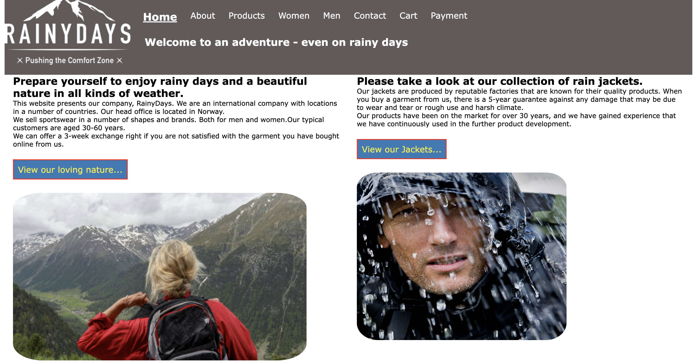
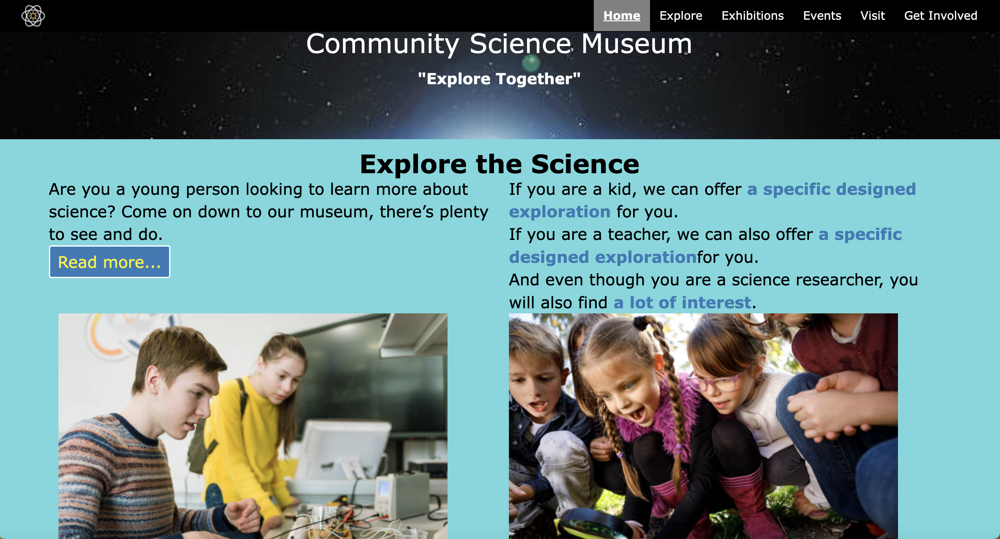
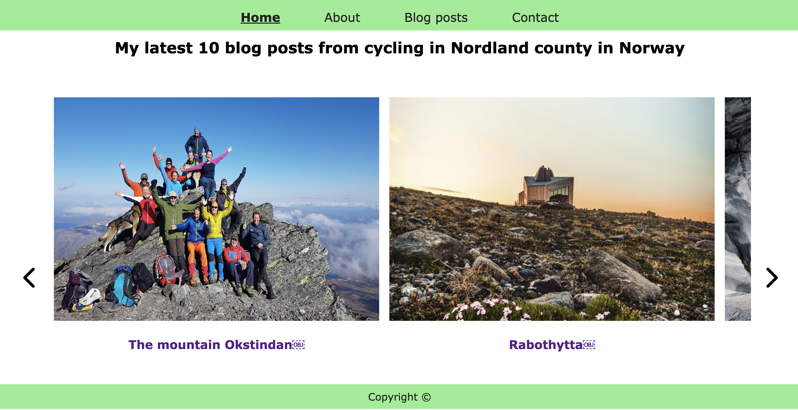

Hi, I am Rune
I am going to be a web developer. I'm studying front-end development at Noroff. So now there are 2 years left before I finish. I have been programming for a long time, but to varying degrees over the years. I took a master's degree in computer science in adulthood. Also that part-time, such as this study. I like the creativity of creating websites. It gives vent to the imagination. Below you can study three of the projects I have worked on at Noroff in the last 2 years.
My portfolio projects
-
Project name:
Rainydays
Project description:
The website is made for a fictional company called Rainydays. They sell sportswear and rainwear.The customer segment is young people who are physically active and like to travel in nature in all kinds of weather.
Project screenshot:
Link to Github:

Link to Netlify:
-
Project name:
Community Science Museum
Project description:
Community Science Museum is a fictional museum that has an exhibition. The website will present and give a taste of these exhibitions. The customers they envision are children, researchers and teachers.
Project screenshot:
Link to Github:
Link to Netlify:
-
Project name:
Blog with WP as headless CMS
Project description:
This is a school project where the student has to create a blog. The theme of the blog is optional. The blog website uses WordPress as a headless CMS. The website uses the API from the installation of WordPress to retrieve data. Home page contains a carousel, programmed in JavaScript.
Project screenshot:
Link to Github:
Link to Netlify:
Some more words about me
Some people think that web development is an art, others think that it depends on thorough planning. I think both are a bit right.
I also think it's about recognizing patterns. And the more you work with web development, the more familiar you become with the most common ways of doing things.
A web developer has to study a lot of theory and documentation, but it is also important to be able to link theory to the practical implementation of a task.
Programming is a way to keep my brain in shape. And I am never finished learning. There is a saying that when you consider yourself fully educated and know everything, you are not fully educated, but finished, in the sense that you are ready for retirement. There is always something new to learn. There are age limits and legal regulations for retirement, but not for developing websites.
I'm looking for someone who will hire me. Or someone I can work for as a freelance web developer. In that context, an important issue is if and how to fit into a work environment with other colleagues. I have an informal and unpretentious appearance. I do not wear a dark suit and tie at work, but prefer sneakers and everyday clothes.
I hardly fit into formal or deeply hierarchical organizations, because I tend to "kick up", not down or sideways. Poor bad bosses. Or lucky employees, if I'm the boss.I prefer a flat organizational structure where there is a short distance from idea to decision, and where one's voice and opinion are easily heard.
It is not so uncommon for prejudice against age in working life in general. Possibly in the IT industry in particular. One can sometimes get the impression that the employee should be 25 years old and have 20 years of experience. I suspect that such prejudices often stem from the employer wanting to shape the employee in his culture, whatever it may be. Well, I'm who I am and I intend to remain who I am. I'm probably not very malleable and I do not want to be streamlined. I'm too individualistic to pretend to be someone other than who I am. I will leave that to those who are going to be film actors. So if you have such wishes for me, sorry, then you are hardly an employer for me.
I want working conditions with reason to believe in an inclusive and good working environment where I am accepted and respected for the way I behave. And where the intrigue and backbiting is unknown.
I have am unpretentious sense of humor which is reflected in the fact that I do not take myself or others so seriously. I am easy going and easy to work with. I do not give up so easily when I encounter technical problems. I like to finish work I have started.
I prefer to spend my free time with my family. I like to take walks in nature, in the woods, by bike, or on a trip to mountain peaks. Or fishing from a rowboat or pull a fishing net.
If any of what I have written about myself appeals, then you are welcome to hire me as a permanent employee or freelance employee. If so, I look forward to hearing from you.
Contact information
A photo of me
I enjoy being out in nature.